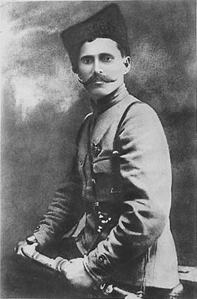

<html></html>.
 <head></head>
 <title></title> 
 <h1></h1> 
 <title>выравнивание по тексту<title>
  .text
  text-align: center
</style>
</title>
</head>
<body>
  <div> 
    <P>Чапаев"земляк Чувашии
  </div>
  </body>
  </html>
  <table>
    <br>
     <tr> <td rowspan='1'></td>
      <div> </div>
    <td>однажды гуляя по по парку"им Чапаева" мы решили спросить у наших друзей знают ли они что нибудь про чапаева
    многие ответели что знают про него поверхностно то есть то что он полководец,что он родился в Российской Империи и т.д.</td>
    <p>
    </table
      <td>И я решил узнать о нём как можно больше. Ведь многие и не понимают как важно не забывать героев ведь они отдали жизнь для того что бы мы жили</td>
      <p>
        
       <b><TD>родился:</TD></b>
       <td>28 января 1887 года</td>
       <p>
        <b><TD>полное имя:</TD></b>
        <TD>Василий Ивановичь Чапаев</TD>
        <P>
          <b><TD>место рождения:</TD></b>
          <TD>Российская империя,Чувашская республика,село Будайка</TD>
          <b><TD>Звание в русской армии:</TD></b>
        <td>ФельдФебель</td>
      </P>
        <b><TD>Звание в красной армии:</TD></b>
        <TD>начдив</TD>
        <P>
          <b><TD>Сражения/Войны:</TD></b>
           <td>Первая мировая,Гражданская война</td>
           <p>
           <b><TD>Умер:</TD></b>
           <td>5 сентября,1919года</td>
           <p>
            <TD>вот вся информация которю я смог откапать и рассказать друзьям </TD>
<p>
  <td>на этом у меня всё,спасибо за внимание :)</td>
  <p>
  <b><TD>работу выполнил:</TD></b>
  <td>Карпов Кирилл</td>


    
